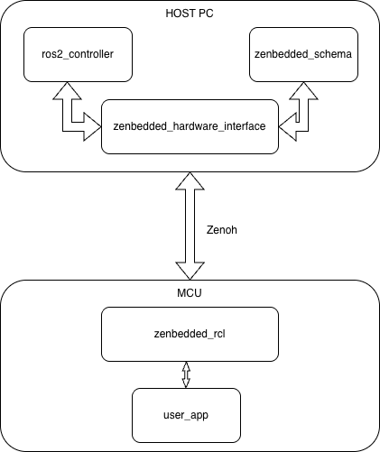
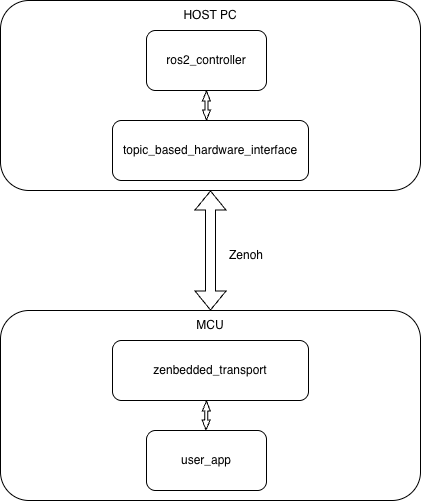

You're reading the documentation for a version of ROS 2 that has reached its EOL (end-of-life), and is no longer officially supported. If you want up-to-date information, please have a look at Kilted.
Architecture
The integration provides two architecture variants.
No-CDR architecture
{kind=link}

No intermediate serialization. zenbedded_schema defines the wire format,
zenbedded_hardware_interface runs on the host, zenbedded_rcl runs on
the MCU — all sharing the same packed struct layout.
CDR architecture
{kind=link}

Uses standard CDR serialization. topic_based_hardware_interface on the host
communicates with zenbedded_transport on the MCU over Zenoh topics.
Package responsibilities
- zenbedded_hardware_interface [stable]
A
ros2_controlSystemInterfacethat connects to remote MCUs over Zenoh. It reads sensor state from a Zenoh subscriber and writes joint commands to a Zenoh publisher. Configuration (endpoint, topics, interface schema) is done via ROS 2 parameters. Usesrealtime_tools::RealtimeBufferfor lock-free state access.- zenbedded_schema [stable]
A YAML-driven schema parser and C/C++ header generator that produces packed binary struct descriptions. Both the hardware interface (host-side) and the firmware (MCU-side) use the same schema to ensure wire-format compatibility. Has no ROS dependencies – builds standalone or with
colcon.- zenbedded_transport [WIP]
Zephyr module infrastructure intended for shared transport logic between the MCU and the ROS 2 host. Currently provides the module scaffolding (
Kconfig,west.yml, Zephyr build integration) with empty serialization and transport stubs. Planned contents: MicroCDR-based serialization headers, shared message definitions, and Zenoh resource key mapping.- zenbedded_rcl [WIP]
An embedded client library for Zephyr RTOS that provides a high-level, ROS-like API for hardware components running on the MCU. The
HardwareComponentbase class (lifecycle-managed sensor/actuator) is implemented and ready for use.ComponentManageris planned but not yet implemented. Communicates directly with the host over Zenoh without any intermediate agent.